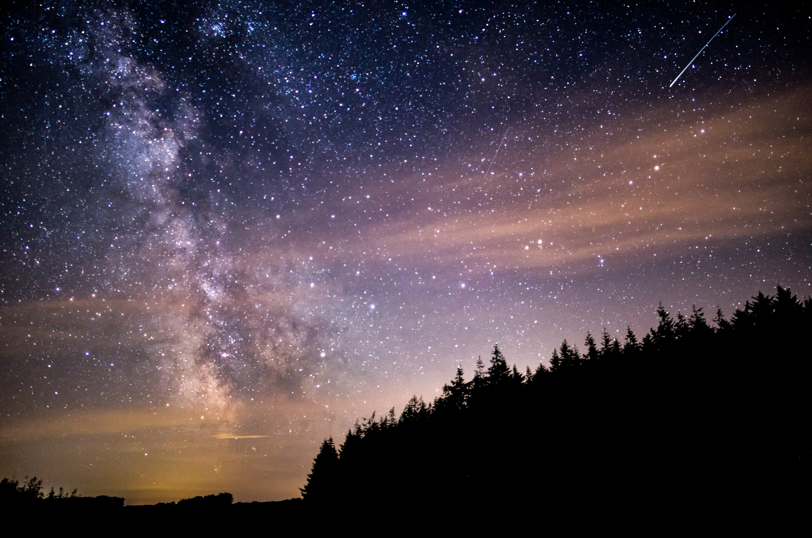

Why Exmoor?
Exmoor, a nature lover's paradise
Every year, over 2 million visitors are drawn to Exmoor for it's starry night skies, wildlife, rolling green landscapes and dramatic coastlines. It is a landscape that has inspired poets, writers and artists for hundreds of years and continues to inspire people today.
This stunning region in the south-west of England captures the hearts of any who visit here. The varied landscape has something for everyone whether it's walking, wildlife watching, or seeking out the popular Exmoor attractions. With so much on offer why would you not visit.